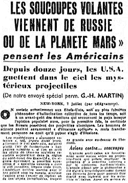

France Soir ce jour-là

À la base de Muroc, le 1er lieutenant Joseph
McHenry, le Sergent/T Ruvolo, et Sergent/S Nauman et Janette Scotte, tous de l'USAF, observent 2 (6 ?) objets
discoïdaux ou sphériques apparemment métalliques et à l'aspect argenté, évoluer selon une large courbe circulaire.
Par la suite l'un des objets évolue selon un cercle plus restreint. Les officiers de la base aérienne observent le
vol de quelques objets lumineux en forme de disque. L'appareil, volant dans le vent, effectue une traversée à
environ 300 miles/h à environ 8000 pieds. Avant ce jour, des ingénieurs furent appelés à quitter leur tâche de
maintenance d'appareil pour observer une soucoupe métallique planer au-dessus de la base. Cas Blue Book n° 50 non expliquéGEPAN, Note d'information n° 3, 1981.
Les militaires établissent un périmètre de sécurité autour de la zone de crash, et mettent William Ware Brazel
sous garde. Ils découvrent un second site de crash à 4 km au sud-est du 1er.
Barney Barnett et 4 autres archéologues tombent sur le nouveau site quelques minutes
avant l'arrivée des militaires. Ils déclarent avoir découvert un objet métallique gris de taille conséquente
et 4 autres corps extraterrestres, de 1,15 m environ. Ils sont exclus de la zone à l'arrivée des militaires.
Le lieutenant Walter Haut, officier de presse de la base de Roswell, annonce aux
agences de la presse, sur ordre du colonel William Hugh Blanchard, la récupération d'une
épave de disque par le major Jesse A. Marcel.
Au Nouveau-Mexique, C. T. Zohm (ingénieur de la marine)
ainsi que 3 techniciens observent plusieurs disques.
Le soir, le général Roger M. Ramey déclare à la presse que ses spécialistes ont commis
une méprise, et qu'il s'agit d'un ballon-sonde.
Avec des observations de "soucoupe volantes" dans le Massachusetts et le Vermont, le nombre d'états en ayant
signalé se montre à 40 "Who Has the Saucer?
40 States Join Game", Daily News, mardi 8 juillet 1947.